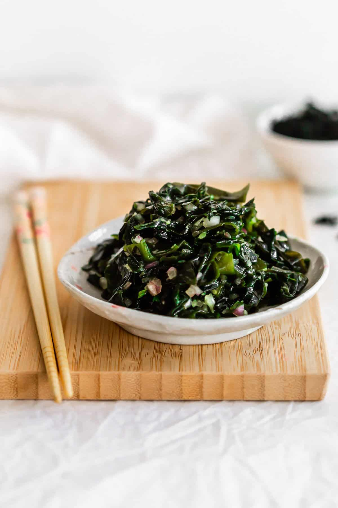

Easy seaweed salad (wakame)

Wakame is a green edible seaweed (kelp) that is used in Japanese cuisine.
It has a silky, satiny texture with a naturally sweet and umami taste.
Dried wakame needs to be reconstituted before using.
Ingredients
- cut dried wakame (seaweed)
- shallot
- ginger
- green onions
- soy sauce
- sesame oil
- yuzu extract
-
Place the dried wakame (seaweed) in a large bowl.
-
Add 600ml room temperature water to the dried seaweed to cover.
-
Let the seaweed reconstitute and absorb the water (about 10 minutes).
-
Once the water has been absorbed, drain off any excess water.
-
To the seaweed, add the minced shallot, ginger, green onions, soy sauce,
sesame oil, and yuzu extract.
-
Give everything a stir, until evenly combined.
-
You can enjoy the salad right away, or store the salad in the fridge for a
minimum of 6 hours for even more flavour.